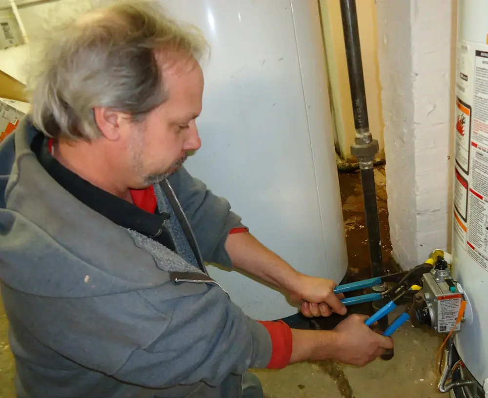
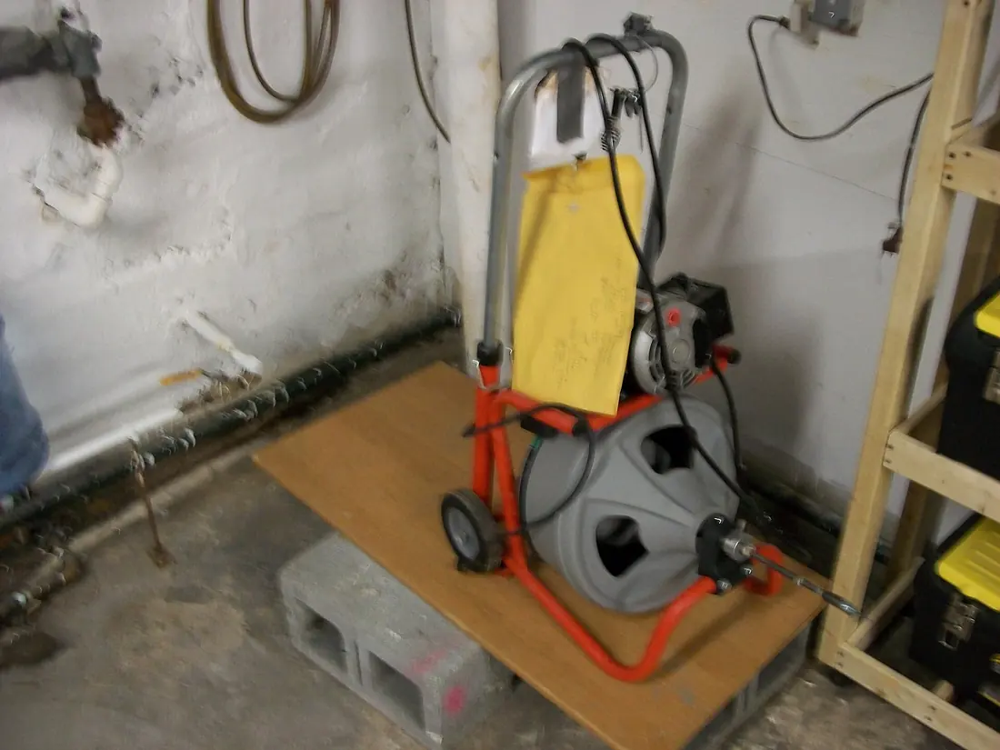
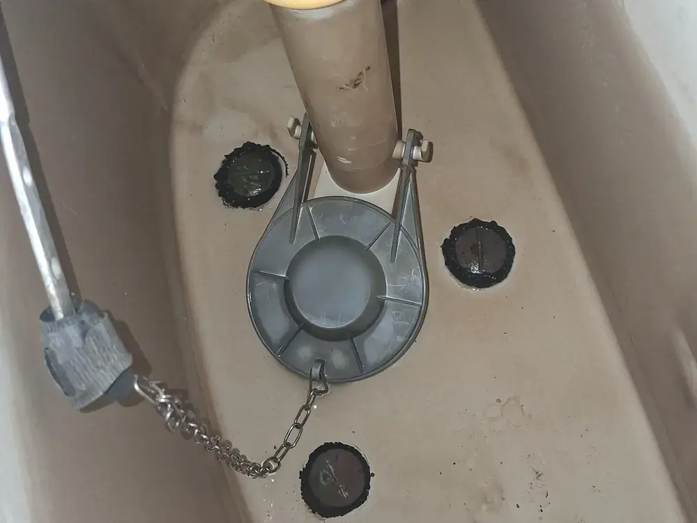
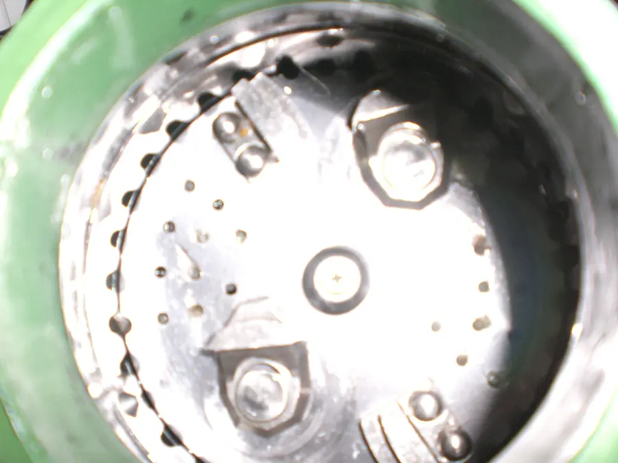
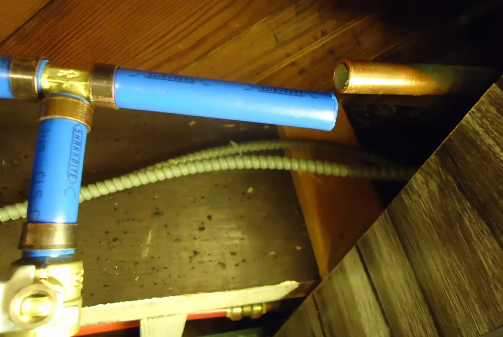
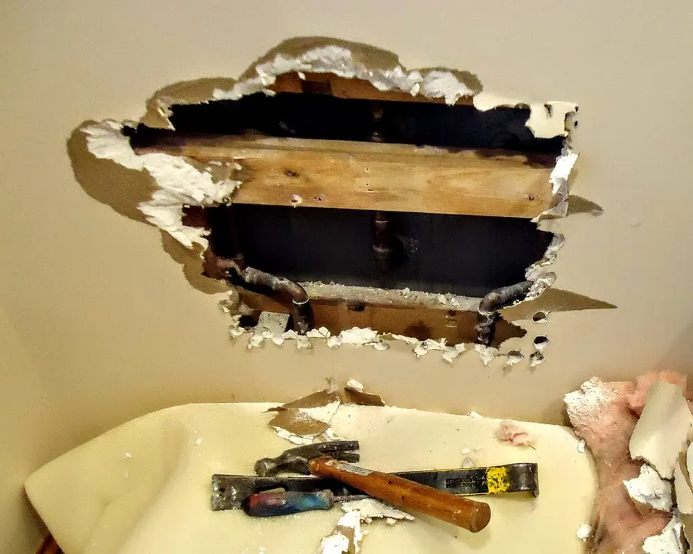
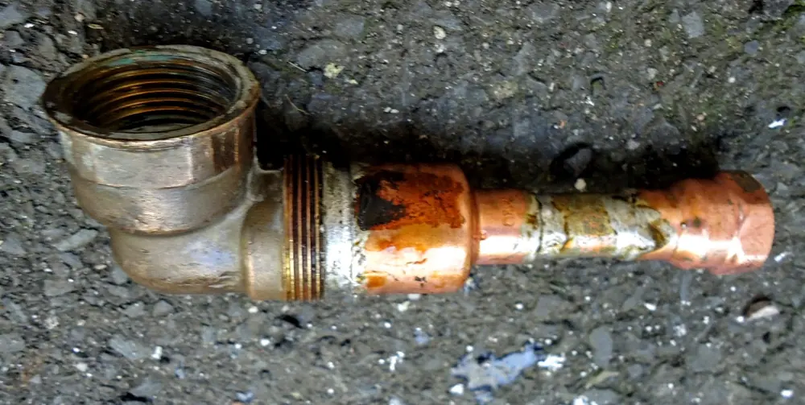
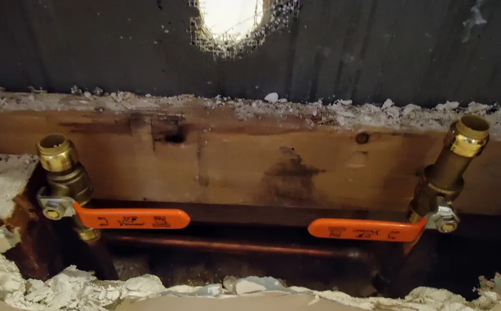
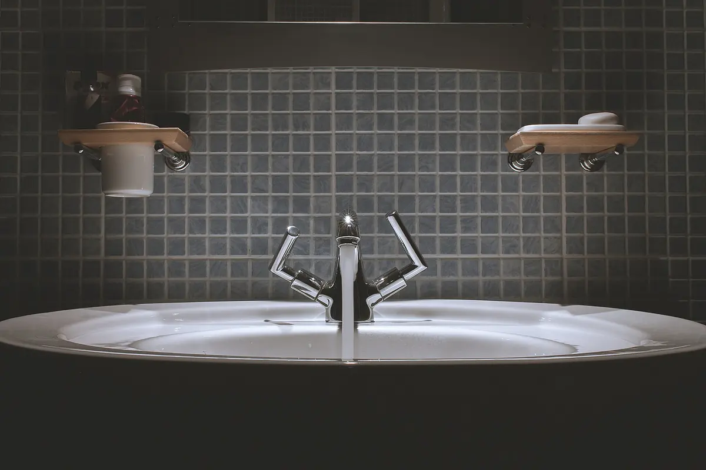

Home / Plumbing
Plumbing
Leaks, drips, slow drains, running toilets and worn-out water heaters. The everyday plumbing every house needs, done by a licensed plumber.

Plumbing jobs we do
Starting prices are for labor. Parts are listed on your quote.

Faucets & shut-off valves
A dripping faucet usually needs a cartridge or washer, not a whole new faucet. Old shut-offs under sinks and toilets often seize and won’t close when you need them.
- Kitchen, bath and laundry faucets
- Quarter-turn shut-off valves
- Outdoor hose bibs, frost-free replacements
from $95faucet repair · valves from $110

Drains
Hand augers for sinks and tubs, a drum machine for laundry and main lines. We show you what came out and how to keep it from coming back.
- Kitchen sinks and disposals
- Tubs, showers and bathroom sinks
- Laundry and main-line cleaning
from $135sinks and tubs

Toilets
Most running or rocking toilets need a flapper, fill valve or new wax ring, not a new toilet. When it is time to replace, we haul the old one away.
- Running, phantom-filling or weak flush
- Leaks at the base or the tank bolts
- New toilets fitted with new supply line
from $120repair · install quoted

Garbage disposals
Jammed, humming, leaking from the bottom, or just tired. We clear it if it can be saved and replace it if it can’t.
- Jams cleared and reset
- Leaking units replaced
- Drain and dishwasher connections redone
from $150replacement, plus unit

Water lines & heaters
Pin-hole leaks, old galvanized runs, and 40–50 gallon tank water heaters, gas or electric. Water heaters are quoted after we see the space and venting.
- Leak repairs and short repipes in PEX
- Tank water heater replacement
- Expansion tanks and pan drains
free quotepriced on site
One job, start to finish
A shower diverter in Norman: the tub spout kept running with the shower on.



Water where it shouldn't be?
First, shut off the water. Most houses here have a shut-off in the garage near the water heater, in a utility closet, or where the line comes into the house. If you can't find it, the city valve is in the meter box near the street.
Then call us. If we're on a job, we'll call you back and tell you honestly how soon we can get there.

What we don't do
We'd rather send you to the right person than take a job we shouldn't.
- Digging up sewer lines
- New gas line runs
- Well pumps
- Septic systems
- Commercial buildings
Call anyway and we'll tell you who we'd use.
Dripping, running or backed up?